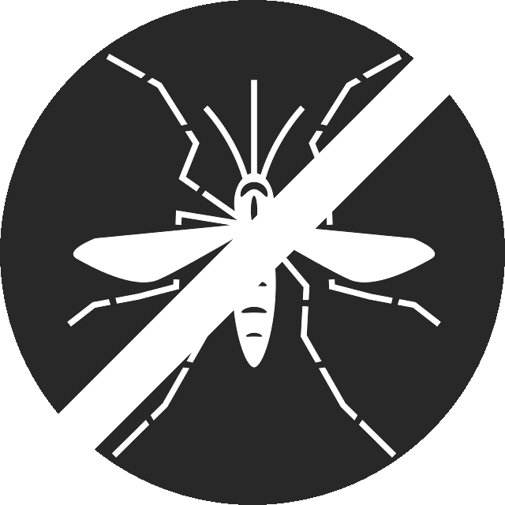

Hi, we are Dengvaxia Scare
And this is our project, Clustering the tweets that spread misinformation related to Dengvaxia.
In an effort to combat disinformation on social media, this project aims to categorize tweets based on their content and analyze which content type was the most prominent in spreading misinformation.
Data Science Team
- Blueming Dan Moneda, CS132 WFV
- Luis Miguel Senatin, CS132 WFV
- Christian Karl Verdad, CS132 WFV